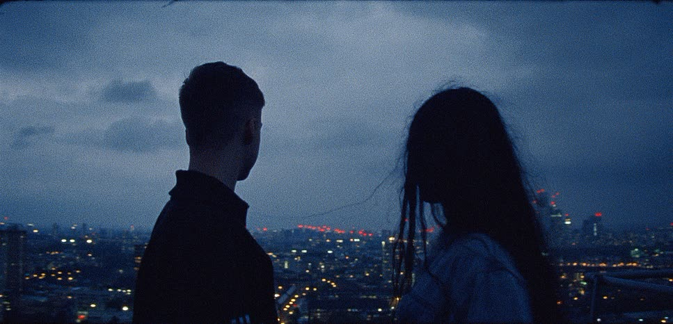

Fund Raise

Phosphene is a short film about the search for creative identity, the craving for validation, and the struggle to create something truly authentic. Following Venus, a young aspiring photographer drawn to a world where desire, drugs, and creativity become intertwined, the film explores the beauty and uncertainty of finding one's place as an artist.
As a filmmaker and aspiring cinematographer, this project is deeply personal to me and an opportunity to bring a story close to my heart to life. Your contribution will help make Phosphene possible, supporting the resources needed to bring this film from page to the screen. Every donation, no matter the amount, brings us one step closer to sharing this story with an audience and creating a film that I hope will inspire empathy and remind others that they are not alone in their creative struggles.
Thailer Fox - Thank you for your support.